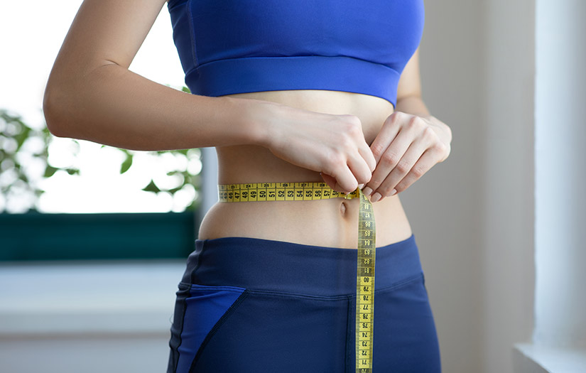

Terug naar beginpagina

Kristien de Boer
Beste, Kristien de Boer
In uw eerder gestuurde mailtje heb ik vernomen dat u een paar jaar geleden een darmontsteking hebt meegemaakt en dat u sindskort ook een ontsteking aan uw lever hebt en dat uw ontlasting er daarom anders uit ziet dan normaal door deze leverontsteking. Om u zo goed mogelijk te helpen ga ik het met u over de volgende punten hebben:
1. Uitleg over het verteringsstelsel
2. Verklaring waarom u zo erg bent afgevallen
3. Dieet advies zodat uw ontlasting weer een normale kleur krijgt.
Topic 1: Uitleg over het verteringsstelsel
Het verteringsstelsel is het systeem in het menselijk lichaam dat verantwoordelijk is voor het verteren van voedsel. Dit gebeurt om de voedingsstoffen uit het voedsel te halen die het lichaam nodig heeft om te functioneren. Het verteringsstelsel bestaat uit verschillende organen en weefsels die samenwerken om het voedsel te verwerken.Het verteringsproces begint in de 1. mond, waar het voedsel wordt kleiner gemaakt door te kauwen en te slikken. Vanuit de mond gaat het voedsel naar de 2. slokdarm, waar het naar de 3. maag wordt vervoerd. In de maag wordt het voedsel verder fijngemalen en gemengd met maagsap, wat het voedsel helpt om te verteren. Vanuit de maag gaat het voedsel naar de 4. dunne darm, waar de voedingsstoffen uit het voedsel worden opgenomen door de darmwand. De resterende stoffen gaan vervolgens naar de 5. dikke darm, waar het vocht wordt opgenomen en het overtollige materiaal wordt uitgescheiden als feces. Het verteringsstelsel is ook verbonden met andere organen, zoals de lever en de alvleesklier, die helpen bij de vertering van voedsel door middel van het afscheiden van hormonen en enzymen.Het verteringsstelsel is dus een belangrijk onderdeel van het menselijk lichaam dat verantwoordelijk is voor het opnemen van voedingsstoffen uit het voedsel dat we eten.
Topic 2: Verklaring waarom u zo erg bent afgevallen
U bent afgevallen door de darmontsteking die u een paar jaar terug hebt gehad. Symptomen van darmontsteking is een verminderde eetlust en regelmatige buikpijn. Door de verminderde eetlust bent u veel minder gaan eten wat heeft geresulteerd in de afname van uw gewicht.
Topic 3: Dieet advies zodat uw ontlasting weer een normale kleur krijgt.
Aangezien u zo erg bent afgevallen en om u gewicht weer op pijl te krijgen raad ik u aan om eten te eten waar veel eiwitten en koolhydraten in zitten. Om te voorkomen om niet nog een keer hepatitis te krijgen, raad ik u ook aan om vlees goed te koken en groente en fruit goed te wassen voordat u het eet. Door rauw of niet goed gekookt vlees en door niet goed gewassen groente of fruit te eten kunt u nog een keer hepatitis krijgen. Ook is goede hygiëne zeer van belang. Zorg daarom ervoor dat u minstens 5x per dag uw handen wast. Doe dit vooral na het gebruik maken van het toilet.
Ik hoop dat ik u zo goed mogelijk heb kunnen helpen. Als u toch nog een vraag heeft, kunt u mij altijd nog een mailtje sturen.
Met vriendelijke groet, Nayef